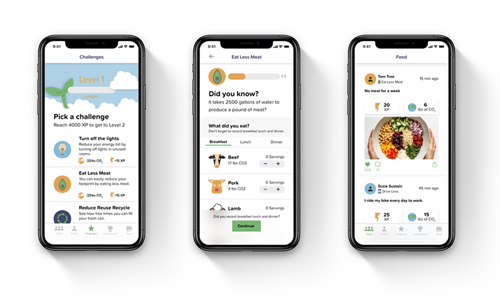
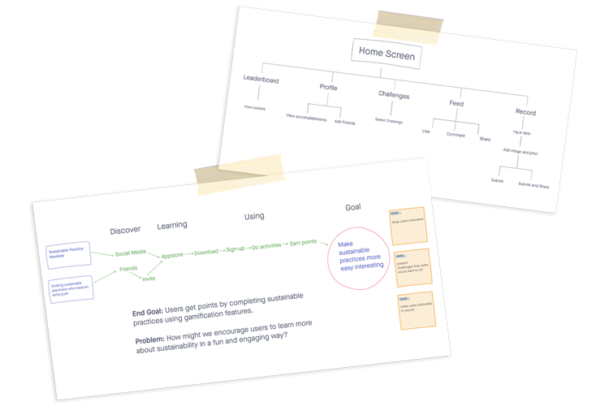
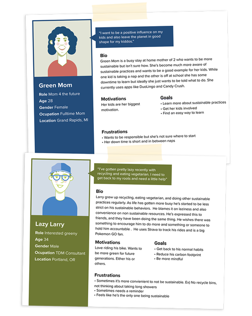
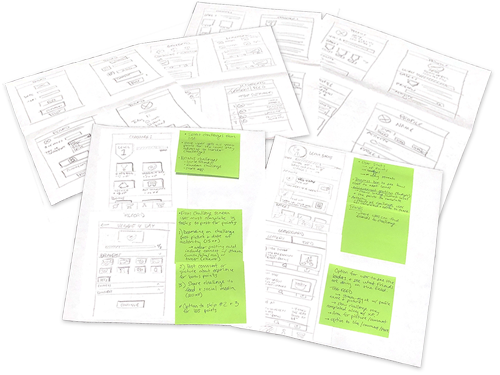
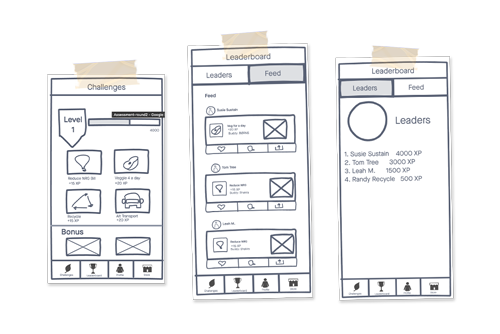
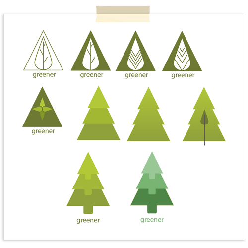
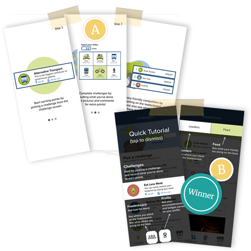

greener™
Overview
Studies have shown that the main reason people don’t incorporate sustainable practices into their lives is because they don’t have enough information. Through a 3 week design sprint I designed an app that gamifies sustainability, called greener. This app will provide users with a fun way to learn responsible habits.
The Problem
Sustainable behaviors are frequently overlooked due to people not having the time and energy to figure out how. This shift in behavior also requires the introduction of mundane tasks that lack immediacy for the user. Through designing Greener I wanted to figure out how might we encourage users to learn more about sustainability in a fun and engaging way?
Users & Audience
This app is for users who are interested in learning more about sustainability. It is suited for those who have never implemented sustainable practices to those you have but want an engaging reminder to keep it up.
Roles
I was the User Experience Designer. I conducted user research, created the personas, user flows, wireframes, prototypes and final user testing. I also collaborated with my mentor Becky for assistance along the way. She provided me with feedback from the Discover to the Deliver phases. I used Figma, Illustrator and InVision.
Scope & Constraints
The scope of the project is to create an app that uses gamification features to gamify sustainability. The end goal will be a simplified version of the game. The app was built in a 3 week design sprint which limited the amount of research and features added.
The Solution
I have developed greener, an app that gamifies sustainability.
User testing verified that the reason most don’t participate in applying sustainable behaviors to their lives is due to not understanding or having time to look up resources. Behavior development requires a cue, routine and a reward which can be synthesized through gamification elements such as leaderboards, badges, points, progress bars, levels and prizes. Engagement is also increased with a social element.
Greener starts a user at level 1 with a set of challenges to complete. As users complete challenges they earn XP points, and can also see how much their challenges reduced their carbon footprint. Users can see their personal accomplishments on their profile, see what their friends are doing on the feed and finally see where they stand overall on the Leaderboard.
Discovery & Research
Mapping out the problem
Greener started as a big concept with many moving parts. To narrow in on the scope of this project I started the sprint by mapping out the problem and creating a flow chart.
I wanted the app to focus on two users, sustainability newbies and those who already practice but need an extra push. The ultimate goal of the app would be to make sustainable practices more easy and interesting.
The initial flow of the app was broken up into 5 different sections from the home screen. The app would need challenges and a recording screen to get users to do sustainable practices. It also needed an interactive aspect such as a leaderboard, profile and feed to keep users motivated through social influence.
Lightning Demos
As part of the sprint I performed lightning demos to research and start brainstorming ideas for the app. I found that Strava, DuoLingo, and Love to Ride were all great examples of apps that encompass gamification.

- Intuitive feed to see what friends are up to.
- Challenges list provides enough information for user to reduce an extra click.
- Profile provides a variety of stats for motivation.

- The profile has badges and overall stats of all rides.
- It’s very easy to navigate and the icons make it fun.
- There is a full history of your activity to compare from years past.
- Recording is really easy, it can be linked up with Strava

- The epitome of gamifying apps. It has badges, levels, points, you name it.
- You can immediately start challenges on the opening screen.
- The profile is clean with all of the users stats in an easily digestible way.
- The leaderboard is only accessible if you complete challenges. This is a great way to encourage users to do challenges.
Personas
Through Journey Mapping and Empathy Maps I developed the target audience for Greener. From this I came up with two personas.
One user is a busy Mom who wants to be more sustainable but isn’t sure how. She’s become much more aware of sustainable practices and wants to be a good example for her kids. While one kid is taking a nap and the other is off at school she has some downtime to learn but ideally she just wants to be told what to do. She uses apps like DuoLingo and Candy Crush.
The other user grew up recycling, eating vegetarian, and doing other sustainable practices regularly. As life has gotten more busy he’s started to be less strict on his sustainable behaviors. Partially laziness and also convenience. He’s expressed this to friends, and they have been doing the same thing. He wishes there was something to encourage him to do more. He uses Strava to track his rides and is a big Pokemon GO fan.
Information Architecture
Storyboarding
Wireframe Sketches
With personas and a storyboard developed I began sketching the first iteration of Greener. I split the screens up into 4 sections:
- Challenges
- Recording
- Profile
- Feed/Leaderboard
I created 4-up sketches for each with a final solution sketch. Since gamification features went hand in hand with creating a habit I remixed features on Duo Lingo and Strava to start creating the concepts.
I wanted the challenges screen to show what level the user was on, a progress bar and a way to list each challenge out without increasing cognitive load. The two overarching concepts had the challenges listed as either buttons with less information, similar to Duo Lingo or a list with more comprehensive information similar to Strava. I decided to move forward with the DuoLingo-esque features.
The recording sketches began as one recording screen however also due to reducing cognitive load I broke it down into 3 screens.
Screen 1 records specific challenges selected
Screen 2 allows users to gain extra points for adding pictures or comments
Screen 3 allows users to submit their points earned, CO2 reduced and an option to share for extra points.
Similar to the challenges screen I knew I wanted the profile screen to have user stats, progress bars, badges, and an activity feed. The 4-up sketches all had the same features, just different arrangements of information. DuoLingo was also a big influence for the layout.
Finally, the Feed and Leaderboard provided social influences through interacting with friends posts as well as see where they stand overall. The 4-up sketches started with influence from Instagram. The Feed of friends posts with the leaders displayed similar to instagram stories. In effort to reduce cognitive overload another version had the Leaderboard and Feed as tabbed features on one screen.
Digital Wireframes
With personas and a storyboard developed I began sketching the first The digital wireframes were created using the solution sketches and further detailed using paper prototypes. No major changes were made at this time.
Visual Design
Color Palette
I wanted the color palette to feel fun, natural, and simple to reflect the aspects of the game and sustainability. The first round of colors included a sea foam green and darker blue however after implementing them into the design I realized that the colors clashed.
Still focusing on the greens and blues I came up with another color palette with more complementary colors. The body of the app had a mix of a lighter and darker blue with a lighter and darker green for accents and buttons. This color palette also has a high contrast for those whose experience color blindness.
Topography
Similar to the color palette I wanted a simple font type that was also a web safe font. I first chose Ariel however after the first iteration changed it to Proxima Nova and then finally to Proxima Soft. I felt the rounder edges were more playful and fit well with the images and icons in the app.
Sky Blue
#86BBD8
Sun Orange
#E0A458
Midnight Blue
#40476D
Grass Green
#79B473
Header 1 is 40 px Proxima Soft Condensed
Header 2 is 30 px Proxima Soft
Header 3 is 20 px Proxima Soft
Body is 16px Proxima Soft
Caption is 14px Proxima Soft
Logo Design and Process
I wanted the name to be related to gaming as well as sustainability. It turned out that most names with “Eco” were already used, as well as other sustainability related words including Virid.
I also came across Greenie, which is defined as someone who campaigns to protect the environment. I felt this could have a negative connotation with some users. It did however remind me of conversations I’ve had in the past where people expressed wanting to be “More Green” or “Greener”. After an app store search, there were no search results for greener so I move ahead with that name.
With a name like “Greener”, the logo should probably be green. I played around with the two greens I used in the app as well as with simple shapes to match the images and icons in the app itself. After a few iterations I landed on a tree made of three arrows pointing up to signify leveling up.
Finally after iterating on the colors I landed on the more blue green version.
Iterations
Prior to usability testing the visual design went through a couple bigger changes. The first iterations color palette clashed and there wasn’t a dominant color for clickable items. Some of the alignment and drop shadows also needed to be adjusted for better flow.
On the challenges screen I changed the layout to list form, similar to Strava challenges. The recording screens first iteration included drop down menus, but I added segmented controls to prevent scrolling and it provided a cool visual. Finally due to confusion of where to start once users were in the app I added onboarding walk through screens so users knew what to do once in the app. I also started calling the Feed/Leaderboard the Feederboard for simplicity and users understood the screen more.
After the usability test and some preference testing I updated the color palette and typography and separated the feed and leaderboard to remove any confusion still associated with the original layout. I also updated some of the icons.
Prototyping & Testing
Usability Test
After making the above adjustments I tested usability with 3 participants. Similar to the screens I broke the tasks up into 4 parts. I wanted to see:
- If it was intuitive for a user to pick a challenge
- What steps the users took to Record
- How users interact with the Profile
- How users interact and navigate the Feederboard
After testing, the users averaged an 84% success rate.
There were three things that stood out:
1 user skipped the onboarding walk through and wasn’t sure where to start once in the game.
1 user didn’t notice the segmented tabs on the recording screen, and another clicked around before finding the tabs.
1 user didn’t notice the Leaders tab on the feederboard
Preference Tests
After testing I created two preference tests. The first was for the onboarding walk through screens and the second was a more tabbed version of the recording screen.
Since one user skipped the onboarding walk through and also had trouble starting I created an overlay tutorial as an alternative. All users liked the overlay better with one user commenting:
“I’m more prone to skip tutorials like ‘A’.”
In the overlay tutorial I also highlighted the tabs on the Feederboard screen to assist any other users who might not notice the tabs.
During testing, one user suggested a clearer connection between the information on the tabs and the tabs themselves. For the second preference test I updated the connection of the tabs. All users found ‘B’ to be much clearer.

Final Prototype
Through many iterations greener provides a way for users to learn about sustainability in a fun and engaging way. Features used in Gamification such as leaderboards and badges as well as social influence by way of the feed, users can develop sustainable habits through the cue of the challenges and a reward for completing those challenges. From here I want to do further preference testing on features to see what users find more engaging, as well as find easier ways for users to record.

Conclusion
Growth and Outcomes
Greener has been an idea since 2015, so it’s been really cool to see this app come to life. It was a fun and interesting exercise to build the app as a sprint.
As my first sprint I learned a lot through each step. I enjoyed the fast pace of getting ideas out however I would find myself getting stuck in the weeds as I navigated most of this project solo.
Initial research and lightning demos helped me understand the concepts of gamification better. It’s a pretty cool learning tool.
As a solo sprinter I wish I would have gotten more feedback earlier and done more preference testing. With a bigger concept in mind I experienced scope creep which caused unnecessary work along the way. With a clearer vision of the app I’m excited to keep working and testing this concept.